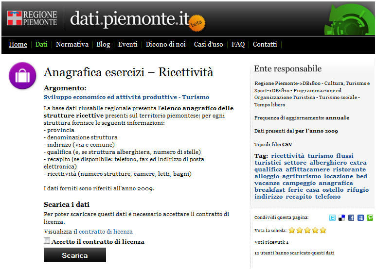
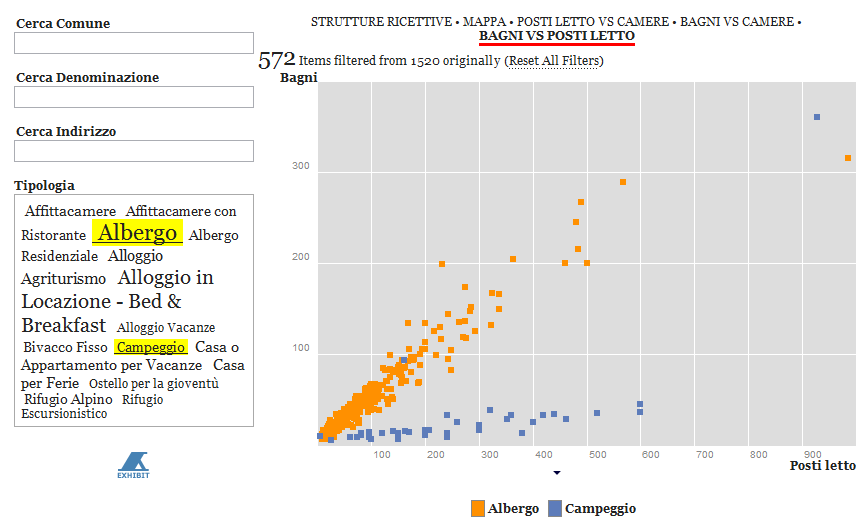

16 giugno, 2011 | di Pietro Blu Giandonato
 Oggi ho potuto seguire a Bari il seminario organizzato da DigitPA dal titolo “Il nuovo CAD: opportunità per i cittadini, adempimenti per le amministrazioni”.
Oggi ho potuto seguire a Bari il seminario organizzato da DigitPA dal titolo “Il nuovo CAD: opportunità per i cittadini, adempimenti per le amministrazioni”.
Fa parte di un ciclo di incontri nell’ambito del Programma Operativo di Assistenza Tecnica Società dell’Informazione (POAT-SI) con il quale si vogliono presentare le opportunità e gli obblighi insiti nel nuovo CAD.
E’ stato un interessante momento di confronto, durante il quale i circa 60 presenti, tra funzionari delle PA, operatori del settore dell’informazione e qualche curioso come me, hanno tempestato di domande e posto molti dubbi ai relatori.
Per quanto mi riguarda, dopo aver ascoltato la prima presentazione “Gli elementi fondamentali della riforma del CAD” di Elena Tabet (qui il PDF delle slide), ho fatto un intervento sottolineando che il Codice (artt. 52 e 68) di fatto parla di “formati aperti” come modalità di interscambio tra le amministrazioni pubbliche, trascurando la necessità – se non proprio obbligo – da parte della PA di rendere disponibili i propri dati, sempre in formati aperti, al pubblico.
Ho comunque spezzato una lancia a favore del MiPA, sottolineando come la definizione della IODL sia un ottimo passo avanti. Ma ho anche fatto notare come tra i gruppi di lavoro (vedi slide 28-34) che si occuperanno di elaborare le regole tecniche sulle numerose questioni annoverate dal CAD in seno a DigitPA, nessuno di fatto si occuperà di open data.
Mi è stato risposto che in effetti al momento non sono previste azioni che vadano a definire regole tecniche o tempi che le PA dovranno rispettare per aprire i dati al pubblico.
Ma proprio questa mancanza di fatto lascia la realizzazione dell’open government alla totale discrezione delle singole PA che lo hanno tra i propri obiettivi prioritari. Molto poche al momento, come abbiamo già accennato sempre qui su TANTO (Piemonte pionieri e Puglia in stand-by), e talvolta in maniera alquanto farraginosa, come racconta Gerlando Gibilaro in un suo approfonditissimo articolo, parlando della Regione Siciliana.
It’s a long way to the top if you wanna open data…

Posted in Eventi | 3 Comments »
24 maggio, 2011 | di Pietro Blu Giandonato
 La legislazione sul software aperto e libero (FOSS o FLOSS che dir si voglia) in Italia è piuttosto indietro, con un Disegno di Legge (il n. 1188) presentato nel lontano febbraio 2002 da un manipolo di senatori (primo firmatario Fiorello Cortiana dei Verdi) e da allora incagliato in esame alla 1a Commissione Affari Costituzionali. Ben otto anni dunque, e nulla lascia sperare che qualcosa possa cambiare.
La legislazione sul software aperto e libero (FOSS o FLOSS che dir si voglia) in Italia è piuttosto indietro, con un Disegno di Legge (il n. 1188) presentato nel lontano febbraio 2002 da un manipolo di senatori (primo firmatario Fiorello Cortiana dei Verdi) e da allora incagliato in esame alla 1a Commissione Affari Costituzionali. Ben otto anni dunque, e nulla lascia sperare che qualcosa possa cambiare.
In realtà, a livello governativo sono state avviate alcune azioni, ma che non hanno finora portato a risultati concreti. Sempre nel 2002 fu istituita con Decreto Ministeriale una apposita “Commissione per il software a codice sorgente aperto nella Pubblica Amministrazione” il cui lavoro portò alla pubblicazione di una “Indagine conoscitiva sul software open source“. Una successiva Direttiva del dicembre 2003 “Sviluppo ed utilizzazione dei programmi informatici da parte delle PA” sancì la possibilità da parte della Pubblica Amministrazione di acquisire ed utilizzare programmi informatici “open source”. Da febbraio a luglio 2004 fu attivo poi un gruppo di lavoro, volto a proseguire i lavori della c.d. “Commissione Meo” del 2002 e che di fatto produsse un documento finale con proposte articolate tra le quali l’istituzione di un “Centro di competenza OSS per la PA” contretizzatosi nel famigerato “Osservatorio sull’open source” nato in seno al CNIPA (oggi DigitPA). Esso raccoglie le esperienze delle Pubbliche Amministrazioni italiane nell’uso di software open source, come pure una sorta di elenco dei “fornitori” di servizi legati al FOSS, al quale chiunque può registrarsi. Di fatto, ad oggi l’Osservatorio appare né più né meno che un mero elenco di “esperienze” e “fornitori”, informazioni peraltro non più aggiornate dal 2007.
Insomma, buone le intenzioni, ma davvero scarsi i risultati, almeno finora. E se andassimo a fare due conti su quanto saranno costati Commissione, Gruppo di lavoro e Osservatorio stesso, forse ci morderemmo anche le mani in qualità di contribuenti…
Una iniziativa da segnalare è senza dubbio quella attuata dal Formez con la Italian Open Data Licence (IODL) v1.0, nata nell’ambito del progetto MiaPA, l’applicazione di “social check-in” per segnalare la performance degli uffici pubblici da parte dei cittadini. Formez auspica l’uso della IODL da parte delle amministrazioni pubbliche che vogliano imboccare concretamente un percorso di open government.
Un ulteriore riferimento legislativo di fondamentale importanza per tutto quanto concerne i dati digitali – e del quale le iniziative legislative regionali devono tenere conto – è costituito dal D.Lgs. 07/03/2005 n. 82 e s.m.i. il cosiddetto Codice dell’Amministrazione Digitale, che purtroppo però trascura totalmente proprio la materia degli open data.
Ottime notizie da alcune Regioni… e non solo
Svariate illuminate Regioni hanno comunque deciso già da anni di dotarsi di leggi proprie per favorire l’uso del software open source. L’Emilia-Romagna ha emanato la L.R. 11/2004, il Friuli Venezia Giulia la L.R. 8/2006, l’Umbria la L.R. 11/2006, il Veneto la L.R. 19/2008, il Piemonte la L.R. 9/2009 e la Toscana la L.R. 54/2009. La Lombardia ha in essere un progetto di legge presentato a luglio del 2010, così come la Sardegna ha un proprio disegno di legge in cantiere risalente a ottobre 2008. Recente poi è la notizia (grazie Antonio) che addirittura il Consiglio Comunale di Fabriano ha deciso di “abbracciare” il software open source, dimostrando che anche una piccola amministrazione locale è capace di grandi rivoluzioni a livello gestionale.
Come riferimento per aggiornamenti riguardo la normativa, sia nazionale che regionale, potete prendere certamente a riferimento l’Associazione per il software libero.
Anche il Presidente Vendola nella mia Puglia ha annunciato mesi fa la presentazione di un disegno di legge sul pluralismo informatico, teso a promuovere e diffondere il FLOSS (così definito nel DdL) a livello regionale. Si tratta di una iniziativa che apparentemente stride, e anche parecchio, con il precedente protocollo d’intesa firmato da Vendola con Microsoft verso fine 2010 per la costituzione di un centro di competenza per promuovere l’innovazione. Il Partito Pirata italiano e l’Associazione per il Software Libero hanno sin da subito contestato l’accordo, chiedendo a Vendola di rispondere ad una lettera aperta. Cosa che lui ha fatto, motivando dal suo punto di vista le ragioni dell’iniziativa. Interessante notare come la vicenda abbia destato molti interessi e dubbi anche all’estero.
Pur lasciando molto perplesso anche me, non voglio qui riprendere la discussione, già avviata nei contesti che vi ho segnalato. Sembra però che le critiche abbiano indotto Vendola a cercare di capirne un pò di più sulla questione. E’ infatti sempre di dicembre scorso la notizia riportata da Punto Informatico che Vendola abbia avuto un incontro con Richard Stallman, guru del software libero, per “fare un approfondimento con alcuni dei protagonisti più importanti della battaglia per il software libero” e addirittura abbia pensato di coinvolgerlo nella revisione proprio del DdL sul pluralismo informatico. Ad oggi però non sappiamo se l’incontro abbia avuto degli sviluppi di qualche tipo.
In Puglia si potrebbe osare di più…
Bene, con tali favorevoli presupposti e grande lungimiranza da parte di Vendola, mi viene spontaneo rilanciare e cogliere l’occasione per capire se a Nichi stia a cuore anche la grande questione riguardante i dati aperti.
Di open data se ne è parlato ampiamente, in varie forme e con illustri personaggi, anche durante il Festival dell’innovazione - ma soprattutto il contestuale Public Camp - entrambi organizzati proprio dalla Regione Puglia a Bari agli inizi di dicembre 2010.
Su TANTO seguiamo l’hype che ormai si è avviato sull’onda dell’open government e sugli open data da qualche tempo, e ovviamente come blogger cerchiamo non solo di far da volano a notizie e iniziative sul tema, ma anche di essere propositivi, con la realizzazione di mashup con dati aperti e liberi e la partecipazione diretta a eventi (ITN 2010 e il Gis Day 2010 di Palermo).

Ed è in quest’ottica che noi di TANTO vogliamo avanzare la proposta al Presidente Vendola e alla sua Giunta, di integrare il Disegno di Legge sul pluralismo informatico che stanno per presentare in Consiglio Regionale, con alcuni articoli che promuovano la diffusione di dati aperti e liberi nell’ambito dell’amministrazione regionale come pure in tutte le altre pubbliche amministrazioni pugliesi, dai Comuni alle Province. Penso ad esempio al grande valore aggiunto del quale potrebbero godere i cittadini con la diffusione in formato aperto e il libero utilizzo dei dati di monitoraggio delle componenti ambientali (aria, acqua, suolo) e dei grandi comparti come quello dei rifiuti. Del resto il Sistema Informativo Territoriale pugliese già consente da tempo lo scaricamento e la fruizione libera (sebbene manchi una chiara definizione della licenza d’uso) dei dati territoriali.
Perciò, qui di seguito proponiamo alcuni articoli da includere nel DdL sul pluralismo informatico, che riguardano proprio i dati aperti e liberi. Naturalmente si tratta di una proposta certamente perfettibile, ed è per questo che invitiamo tutti i nostri lettori e chiunque abbia interesse, ad avanzare proprie proposte per migliorarla. Il nostro obiettivo è quello di presentarle ufficialmente al Presidente Vendola, e se verranno mai accolte, la Regione Puglia sarebbe la prima a sancire legislativamente la diffusione di dati aperti e liberi. Il passo successivo sarebbe ovviamente quello di costruire un portale regionale, punto di riferimento istituzionale, analogamente a quanto fatto in maniera così lungimirante dalla Regione Piemonte con http://dati.piemonte.it
Il testo del DdL n. 5 del 10/02/2011 “Norme in materia di pluralismo informatico, sull’adozione e la diffusione del free libre open source software e open hardware e sulla portabilità dei documenti nella pubblica amministrazione regionale e locale” proposto dalla Giunta della Regione Puglia è reperibile sul sito web del Consiglio Regionale, nella sezione “Proposte di Legge” con Atto Consiliare n. 68. Sul medesimo sito, per chi volesse, è possibile seguirne l’iter istitutivo.
Qui di seguito proponiamo in maniera molto asciutta ed essenziale le poche modifiche al testo in discussione, che potrebbero dargli obiettivi ancora più ampi, unendo in maniera sinergica la promozione dell’utilizzo del FLOSS con la liberazione dei dati pubblici, in possesso proprio delle Pubbliche Amministrazioni.
Art. 1 – Finalità
Dopo le parole “nel rispetto della normativa statale in materia di informatizzazione della Pubblica Amministrazione” inserire le seguenti parole “e in particolare da quanto disposto dal D.Lgs. 07/03/2005 n. 82 e s.m.i.“.
Art. 3 – Definizioni
Inserire le seguenti definizioni:
q) per dati pubblici si intendono tutti i dati conoscibili da chiunque, così come definiti alla lett. n) del D.Lgs. 07/03/2005 n. 82 e s.m.i. I dati pubblici sono dati che non sono soggetti a limitazioni di privacy o sicurezza.
r) per dati aperti (o open data) si intendono quei dati organizzati in archivi che, nel rispetto delle condizioni così come definite alla lett. b), c) e d) del presente articolo, nonché al Capo V del D.Lgs. 07/03/2005 n. 82 e s.m.i., rispondono ai seguenti requisiti:
- sono resi direttamente disponibili ai chiunque, senza necessità di identificazione informatica, come disposto dal comma 3 art. 54 del D.Lgs. 07/03/2005 e s.m.i.;
- sono ricercabili per parole chiave o per ambito tematico mediante strumenti quali cataloghi o motori di ricerca;
- sono pubblicati così come raccolti alla fonte, con il medesimo livello di definizione e di dettaglio, non in forma aggregata o modificata;
- sono immediatamente disponibili, al fine di preservarne il valore, l’attendibilità e l’integrità;
- sono strutturati in modo tale da consentire il loro trattamento automatizzato da parte di elaboratori e macchine;
- sono disponibili in formati non proprietari, ovvero secondo standard aperti;
- non devono essere soggetti a copyright, brevetti, marchi di fabbrica o regole sul segreto commerciale, eventuali limitazioni sulla privacy e/o la sicurezza possono essere ammesse come disciplinate dalle leggi vigenti;
- indicano le metodologie di realizzazione adottate.
s) per formato proprietario (o chiuso) si intende qualsiasi formato di archivio dati le cui specifiche tecniche non siano di pubblico dominio o non siano disponibili gratuitamente, ovvero siano soggette a restrizioni basate su diritti d’autore.
Art. 6 – Raccolta e gestione dei dati da parte della Pubblica Amministrazione [in sostituzione degli artt. 6 e 6 bis]
1. Tutti i servizi telematici messi a disposizione dalla Pubblica Amministrazione Regionale e Locale devono rispettare rigorosi criteri atti a favorire i massimi livelli di accessibilità sia per i diversamente abili sia in termini di neutralità tecnologica.
2. La Pubblica Amministrazione Regionale e Locale, con riferimento ai dati pubblici dalla stessa raccolti e gestiti, adotta standard aperti, protocolli aperti e formati aperti, così come definiti alle lett. b), c) d) dell’art. 3, rispettando i criteri dei dati aperti così come definiti dalla lett. r) dell’art. 3.
3. La Pubblica Amministrazione Regionale e Locale in possesso di dati pubblici promuove la loro diffusione in forma di dati aperti, come definiti alla lettera r) dell’art. 3, con modalità che ne consentano la rintracciabilità dai motori di ricerca su internet e lo scaricamento dai siti web istituzionali delle Pubbliche Amministrazioni stesse assicurando la parità di trattamento tra gli utilizzatori.
4. La Pubblica Amministrazione Regionale e Locale si impegna affinché tutti i servizi messi a disposizione siano interoperabili, facciano uso di protocolli e formati aperti, e permettano, attraverso lo sviluppo di piattaforme applicative comuni, l’interazione e l’integrazione fra di loro.
5. La Pubblica Amministrazione responsabile dei dati, al fine di rendere effettivo l’utilizzo dei dati in suo possesso, designa il responsabile del procedimento per le richieste di utilizzazione dei dati e per rispondere alle denunce di violazioni dei principi di cui alla lettera r) dell’art. 3.
Art. 7 bis – Ulteriori obblighi della Pubblica Amministrazione allargata [nuovo articolo]
1. La Pubblica Amministrazione nella predisposizione dei bandi di gara, nonché nella selezione di progettisti, collaboratori e consulenti, richiede, con apposita clausola contrattuale, che il fornitore, il consulente o l’appaltatore del servizio fornisca i dati dallo stesso raccolti, nonché i pareri, le consulenze ed i progetti, oltre che nelle forme tradizionali, anche in formato digitale e con standard che ne consentano l’elaborazione da parte di elaboratori e la modificabilità da parte della Pubblica Amministrazione.
2. I dati detenuti dalle Pubbliche Amministrazioni Regionali e Locali, così come definito alla lett. m) del D.Lgs. 07/03/2005 n. 82 e s.m.i., ivi compresi i dati prodotti da software sviluppato da terzi, memorizzati in un formato proprietario per il quale le Pubbliche Amministrazioni Regionali e Locali detengono tutti i diritti, saranno convertiti in formati aperti entro due anni dalla data di entrata in vigore della presente legge.
3. I dati esistenti memorizzati in un formato proprietario, del quale la Pubblica Amministrazione Regionale e Locale non possiede i diritti, potranno continuare ad essere memorizzati ed elaborati in quel formato. Progetti e attività che continuano ad usare formati chiusi devono essere riesaminati ogni quattro anni, per determinare se il formato sia diventato aperto e, in caso contrario, se un formato appropriato aperto esista e possa essere adottato in luogo di quello proprietario.
4. In caso di progetti impegnati a convertire dati già esistenti da un formato proprietario in un altro formato, per quest’ultimo deve essere scelto un formato di dati aperto, a meno che non vi siano motivi tecnici o giuridici che lo impediscano.
5. In caso vengano resi pubblici dati esistenti, questi devono essere convertiti in formati aperti, tenendo conto delle situazioni descritte nei commi precedenti.
“Open data, tutti ne parlano, ma come si fa?”
Per rispondere a questa domanda, l’Associazione italiana per l’Open Government ha da poco messo online le “Linee guida per l’open data”, una sorta di vademecum indirizzato a tutti i soggetti che hanno seriamente intenzione di liberare i dati in loro possesso. Una agile cassetta degli attrezzi nella quale troviamo le definizioni fondamentali di open data e open government, perché passare agli open data, quali aspetti tecnici affrontare e le questioni giuridiche ad essi collegate.
Un’altra indispensabile risorsa da tenere presente è Making Your Data Open: a Guide di Open Data Commons, un progetto della Open Knowledge Foundation che ha come obiettivi proprio la diffusione del concetto di open data e il supporto per la loro adozione.
Da poco è stato inoltre lanciato APPSFORITALY, un contest organizzato da Associazione Italiana per l’Open Government, IWA e TopIX per la realizzazione di applicazioni basate su dati pubblici rilasciati da amministrazioni pubbliche. Ma se gli open data disponibili sono ancora così pochi, sarà difficile avere un buon numero di partecipanti.
Insomma, gli ingredienti ci sono tutti, le opportunità anche, la gente non manca… Quale migliore occasione dunque per la Regione Puglia affinché approvi il DdL e contribuisca concretamente a scatenare la creatività di tutti gli hacktivisti che ci sono in giro per l’Italia?
Posted in Dati | 13 Comments »
17 gennaio, 2011 | di Antonio Falciano
Scopo del presente post è presentare un formidabile linguaggio di scripting, in cui io e Giovanni Allegri ci siamo imbattuti da un po’ di tempo a questa parte, che presenta delle potenzialità davvero eccezionali nel processamento di dati geospaziali. Il pretesto occasionale che ha riacceso il nostro sopito interesse nei confronti di JEQL é un recente post del blog Lin.ear Th.inking, Visualizing geodetic information with JEQL, in cui l’autore Martin Davis (aka “Dr JTS”, l’attuale designer e lead developer della fantastica libreria JTS …e non solo!) introduce delle nuove funzioni geodetiche di calcolo sulle geometrie all’interno di JTS, illustrandone l’utilizzo mediante un’applicazione in JEQL che ripercorreremo nel seguito.
Cos’è JEQL?
JEQL è un Query Language sviluppato in Java, dove la “E” può assumere i seguenti significati:
- Extended, poiché implementa un numero sempre crescente di estensioni che lo rende più potente nel processamento dei dati rispetto alle tante versioni e dialetti SQL esistenti;
- Embeddable, in quanto il motore di JEQL può essere integrato all’interno di altre applicazioni, in modo da essere utilizzato come query language per modelli di dati tabellari;
- ETL, essendo l’Extract/Transform/Load il caso d’uso ideale di JEQL;
- Efficient, dato che garantisce velocità di sviluppo ed esecuzione.
JEQL è dunque un linguaggio di scripting che consente il processamento di strutture di dati tabellari, compresi quelli geografici vettoriali. Fin qui nulla di nuovo, probabilmente penseranno i lettori esperti dei possenti RDBMS con estensione spaziale (PostgreSQL + PostGIS, Oracle Spatial, MySQL, ecc.) o del più leggero e, al tempo stesso, molto versatile SpatiaLite. Analogamente a quest’ultimo, JEQL non richiede l’installazione di un server database e ciò, assieme al fatto che è un linguaggio di scripting, rappresenta un grosso vantaggio in termini di portabilità. Si pensi ad esempio alla replicazione della configurazione di un DBMS a distanza di parecchio tempo oppure alla condivisione di uno script con un nostro collega. Inoltre, anche la velocità di sviluppo e di esecuzione rappresentano dei non trascurabili punti di forza. Naturalmente, esistono anche dei task non coperti da JEQL per i quali un RDBMS è insuperabile.
Quali tipi di dati è in grado di utilizzare? Oltre ai classici tipi Java (interi, stringhe, double) e le date, JEQL supporta anche le geometrie JTS e un vasto repertorio in continua crescita di funzioni spaziali, costruttori di predicati e funzioni di aggregazione, che lo rendono uno strumento particolarmente adatto per il processamento di dataset spaziali. Inoltre, è in grado di accedere in lettura e scrittura a diversi formati di dati (CSV, DBF, SHP, KML) e database compatibili con JDBC (Java Data Base Connectivity).
L’installazione di JEQL è molto semplice: nei sistemi operativi Windows, basta scompattare il pacchetto di installazione (è appena stata rilasciata la versione 0.9) in una cartella con percorso non contenente spazi ([JEQL_HOME]) ed aggiungere nella variabile PATH di sistema il percorso [JEQL_HOME]\bin. Manca, tuttavia, uno script shell o qualcosa di analogo per Linux, che tuttavia non dovrebbe essere difficile da produrre.
L’apprendimento del linguaggio JEQL è abbastanza rapido, soprattutto per chi possiede già dei rudimenti di SQL, ed è facilitato dall’interprete che guida l’utente nell’individuazione e nella correzione degli errori. Il pacchetto di installazione è inoltre corredato da una lista di unit test, ovvero gli stessi esempi basilari utilizzati in fase di collaudo del codice. La documentazione rappresenta invece una delle poche note dolenti, essendo ancora un work in progress, nonostante la presenza di alcuni illuminanti esempi applicativi, diversi post su Lin.ear Th.inking e una mailing list dedicata, oltre alla indiscutibile cortesia e competenza dello sviluppatore.
Attualmente JEQL è rilasciato con doppia licenza: freeware e “commerciale”. Quest’ultima per consentirne l’integrazione all’interno di software commerciali (…e in quelli open source?).
Un esempio applicativo: worldAirRoutes.jql
Nel seguito, si cercherà di fornire un saggio delle potenzialità di JEQL, proponendoci le stesse finalità del post citato in precedenza, ovvero disegnare le rotte aeree a scala globale secondo linee ortodromiche, piuttosto che linee rette, con tutti gli accorgimenti del caso al fine di ottenere una buona resa grafica. Ci cimenteremo passo dopo passo con le fasi di importazione e normalizzazione dei dati di interesse fino al raggiungimento dello scopo. I dati utilizzati nell’applicazione sono:
In particolare, i primi due sono parte degli open data del progetto OpenFlights, rilasciati con Open Database License (Odbl), mentre lo shapefile semplificato dei world borders (a proposito della loro qualità, si consiglia la lettura di questo post e successivi) è rilasciato da thematicmapping.org con licenza Creative Commons CC-SA.
Dopo aver installato JEQL 0.9, creiamo una cartella, vi collochiamo i dati appena scaricati (scompattando naturalmente lo zip file) e vi definiamo inoltre un semplice file di testo (worldAirRoutes.jql) nel quale andremo a scrivere il nostro codice.
Il primo passo dell’applicazione consiste nell’importazione dei dati relativi agli aeroporti (airport.dat), tenendo presente che i file .dat in esame sono in formato CSV:
// Read data from CSV
CSVReader airports file: "airports.dat";
numAirports = select count(*) from airports;
Print "Number of airports to clean: " + val(numAirports);
Print airports limit: 10;
Salviamo lo script, apriamo il prompt dei comandi e collochiamoci nella directory che lo contiene. Per eseguirlo occorre digitare jeql worldAirRoutes.jql e premere il tasto Invio. Successivamente, nel prompt dei comandi comparirà qualcosa del genere:
Number of airports to clean: 6344
col1:String, col2:String, col3:String, col4:String, col5:String, col6:String, col7:String, col8:String, col9:String, col10:String, col11:String
1 Goroka Goroka Papua New Guinea GKA AYGA -6.081689 145.391881 5282 10 U
2 Madang Madang Papua New Guinea MAG AYMD -5.207083 145.7887 20 10 U
3 Mount Hagen Mount Hagen Papua New Guinea HGU AYMH -5.826789 144.295861 5388 10 U
...
La prima cosa che scopriamo è che le colonne della tabella “airports” sono identificate come “col1, col2 … colN”, sebbene il file CSV sia sprovvisto delle relative intestazioni dei campi (per la descrizione dei quali si rimanda a questa pagina), e che i campi sono considerati tutti di tipo String. Procediamo quindi con la normalizzazione dei dati degli aeroporti, selezionando i dati di nostro interesse:
// Select airports data with valid IATA airport code
airports2 = select
col2 as name,
col3 as city,
col4 as country,
col5 as code,
col7 as lat,
col8 as lon
from airports
where RegEx.matches(col5,'[A-Z]{3}');
E’ interessante notare che:
- per definire gli alias dei campi di una tabella è utilizzata la parola chiave as, così come avviene solitamente in molte versioni di SQL, tuttavia si tenga presente che in JEQL il suo uso è a discrezione dell’utente;
Occorre, inoltre, verificare la presenza di eventuali codici IATA duplicati, in modo da essere certi dell’univocità del campo “code”, al fine di utilizzarlo poi come chiave esterna nelle operazioni di join con la tabella delle rotte aeree (routes.dat), come si vedrà nel seguito.
// Find duplicate IATA airport codes in airports data
duplicateCodes = select *
from (select code, count(code) as numOccurrences
from airports2
group by code) as duplicates
where numOccurrences > 1;
Print duplicateCodes;
A fronte di tale verifica, si riscontra un unico codice duplicato (“TCG”). Avvalendoci dell’ausilio della banca dati ufficiale è possibile risolvere tale ambiguità, scartando l’aeroporto di Tocache (Cina) al quale è stato erroneamente attribuito questo codice. A tal fine, la clausola where della prima select diventa:
where RegEx.matches(col5,'[A-Z]{3}')
and col3!="Tocache";
E’ dunque possibile commentare il codice relativo alla ricerca dei duplicati (“//” commenta una singola riga, mentre “/* … */” tutto il codice tra essi compreso – non a caso, come nel linguaggio Java) e verificare la bontà dei risultati fin qui ottenuti, visualizzando eventualmente i primi dieci record della tabella “airports2”.
// Check intermediate results
numAirports2 = select count(*) from airports2;
Print "Number of airports without duplicates: " + val(numAirports2);
Omettendo per brevità la visualizzazione del contenuto delle tabelle, otteniamo:
Number of airports without duplicates: 5023
Successivamente, si procede all’importazione e normalizzazione dei dati relativi alle rotte aeree (routes.dat). In particolare, selezioniamo i codici IATA degli aeroporti di origine e destinazione relativi a ciascuna rotta aerea, e li combiniamo in un’unica stringa in modo da poter escludere le rotte duplicate mediante l’operazione di raggruppamento (group by). Da queste stringhe è poi possibile recuperare nuovamente i codici dai quali sono stati ottenuti. Inoltre, definiamo una chiave primaria “rid” tramite la funzione rownum() che restituisce il numero di riga.
// Read data from CSV
CSVReader routes file: "routes.dat";
numRoutes = select count(*) from routes;
Print "Number of routes to clean: " + val(numRoutes);
// Select routes data removing duplicates
routes2 = select
rownum() as rid,
String.substring(routeCode, 0, 3) as fromCode,
String.substring(routeCode, 3, 6) as toCode
from (select
//col3 as fromCode,
//col5 as toCode,
col3+col5 as routeCode
from routes
order by routeCode asc) as routesWithDuplicates
group by routeCode;
// Check intermediate results
numRoutes2 = select count(*) from routes2;
Print "Number of routes without duplicates: " + val(numRoutes2);
ottenendo:
Number of routes to clean: 64114
Number of routes without duplicates: 36004
Il task successivo consiste nell’associare ad ogni rotta aerea le coordinate dell’aeroporto di partenza e di quello di destinazione, scartando le coordinate con valore null e validando quelle che non lo sono, facendo ancora una volta ricorso alle espressioni regolari.
// Extract origin airport data
fromAirport = select
rid,
fromCode,
name as fromName,
city as fromCity,
country as fromCountry,
lat as fromLat,
lon as fromLon
from routes2
left outer join airports2
on routes2.fromCode == airports2.code;
// Extract destination airport data
toAirport = select
rid,
toCode,
name as toName,
city as toCity,
country as toCountry,
lat as toLat,
lon as toLon
from routes2
left outer join airports2
on routes2.toCode == airports2.code;
// Join the last two tables (removing records with null coords)
troute = select fromAirport.*, toAirport.* except rid
from fromAirport
join toAirport
on fromAirport.rid==toAirport.rid
where not Val.isNull(fromLat) and not Val.isNull(fromLon) and not Val.isNull(toLat) and not Val.isNull(toLon);
// Check if coords are valid
troute2 = select *
from troute
where RegEx.matches(fromLat,'-?((([0-9]|[1-8][0-9])(\.[0-9]*)?)|(90))')
and RegEx.matches(fromLon,'-?((([0-9]|[1-9][0-9]|1[0-7][0-9])(\.[0-9]*)?)|(180))')
and RegEx.matches(toLat,'-?((([0-9]|[1-8][0-9])(\.[0-9]*)?)|(90))')
and RegEx.matches(toLon,'-?((([0-9]|[1-9][0-9]|1[0-7][0-9])(\.[0-9]*)?)|(180))');
// Check intermediate result
numRoutes3 = select count(*) from troute2;
Print "Number of routes without duplicates and with valid coords: " + val(numRoutes3);
che ci restituisce:
Number of routes without duplicates and with valid coords: 35475
Un altro aspetto degno di nota è l’utilizzo della parola chiave except nella select della tabella “troute”. Si tratta di un’estensione solitamente assente nei vari linguaggi SQL che ci consente di selezionare tutti i campi di una particolare tabella ad eccezione di un campo.
Infine, selezioniamo i dati da cui poter derivare le geometrie delle rotte aeree e rappresentarle graficamente (da qui in poi, il codice è quello del Dr JTS con qualche piccolo adattamento):
// Convert coords from string to double
trte = select fromCity, toCity,
Val.toDouble(fromLon) fromLon, Val.toDouble(fromLat) fromLat,
Val.toDouble(toLon) toLon, Val.toDouble(toLat) toLat
from troute2;
// Split geodetic arcs and calculate lengths
tlines = select fromCity, toCity, line, len
with {
line = Geodetic.split180(Geodetic.arc(fromLon, fromLat, toLon, toLat, 2));
len = Geom.length(line);
}
from trte order by len desc;
// Interpolate line color and fix line width
tplot = select line,
Color.interpolate("ffffff", "00aacc", "0000ff", len / 50.0 ) lineColor,
0.2 lineWidth
from tlines;
// Import shapefile data
ShapefileReader tworld file: "TM_WORLD_BORDERS_SIMPL-0.3.shp";
// Select geometries and define line and fill colors
tworldLine = select GEOMETRY, "222222" lineColor from tworld;
tworldFill = select GEOMETRY, "333333" fillColor from tworld;
// Plot routes with world landmasses
width = 1800;
Plot width: width height: width / 2
extent: LINESTRING(-180 -90, 180 90)
data: tworldFill
data: tplot
data: tworldLine
file: "routes.png";
// Plot routes without world landmasses
Plot width: width height: width / 2
extent: LINESTRING(-180 -90, 180 90)
data: tplot
file: "routes_only.png";
Qui è possibile effettuare il download dell’intero script. Infine, si mostrano le due immagini risultanti in cui sono rappresentate le rotte aeree rispettivamente con e senza i world borders. In particolare, le rotte sono disegnate in ordine di lunghezza decrescente, utilizzando un colore interpolato in base alla lunghezza, per cui spiccano le rotte più brevi con colore più chiaro. Anche nella seconda immagine, è possibile rilevare con buona approssimazione i limiti di molte terre emerse.


Come giustamente afferma Martin Davis, dalla densità delle rotte aeree che si percepisce nelle immagini si evince come agli europei piaccia molto volare. Ma neanche quelli delle East Coast scherzano! 
Conclusioni
L’esempio applicativo appena mostrato esprime già molte delle potenzialità offerte da JEQL, e i comandi attualmente disponibili sono molto numerosi (basta digitare jeql -man per scoprirlo!). JEQL offre inoltre anche la possibilità di estendere le sue funzionalità tramite un’interfaccia di programmazione (API), non ancora documentata, tramite la quale creare nuovi comandi e funzioni da poter utilizzare all’interno dei nostri script. Non nascondiamo la speranza, in parte malcelata dallo stesso Martin Davis, che un domani si possa usufruire di una doppia licenza open source/commerciale, che permetta di contribuire alla crescita della libreria con nuovi plugin e una migliore documentazione di tutte le caratteristiche offerte.
Ringraziamenti
Desidero ringraziare Giovanni Allegri, non solo per il proficuo scambio di idee avvenuto dietro le quinte, ma anche per aver sollecitato il rilascio della nuova release (0.9) di JEQL, senza la quale non sarebbe stato possibile riprodurre l’applicazione, e naturalmente Martin Davis, il padre di questo formidabile linguaggio, per aver ispirato questo post.
Posted in Strumenti | 2 Comments »
23 novembre, 2010 | di Antonio Falciano
Oggi ricade il trentennale del terremoto del 23 novembre 1980, noto anche come il “terremoto dell’Irpinia” , i cui effetti devastanti colpirono una vasta area dell’Italia meridionale, posta a cavallo delle province di Avellino, Salerno e Potenza, mietendo quasi 3000 vittime. Tra le immagini indelebili ancora scolpite nella mia memoria di potentino vi è quella dell’orologio del Palazzo del Governo a Piazza Mario Pagano che si è fermato alle 19:34, l’ora esatta in cui la terra ha cominciato a tremare per 90 interminabili secondi. Quel quadrante rotto rappresenta l’emblema di una profonda ferita che ancora oggi non si è rimarginata del tutto.
Trenta anni fa non esisteva ancora il Sistema Nazionale di Protezione Civile, così come lo conosciamo oggi, e si nominò un Commissario Straordinario allo scopo di fronteggiare l’emergenza e coordinare i soccorsi delle popolazioni interessate dal terremoto, che entrò in servizio solamente 24 ore dopo la catastrofe. Gli eventi sismici molto recenti verificatisi in Abruzzo (aprile 2009) e ad Haiti (gennaio 2010), così come altre calamità naturali, dimostrano come la celerità degli interventi durante le prime ore di soccorso sia fondamentale nel salvataggio di vite umane. Una risposta tempestiva e efficiente della Protezione Civile può fare la differenza, ma tutto ciò non può e non deve bastare.
“L’Italia è un paese di santi, poeti, navigatori…” e purtroppo anche di terremoti. Basti pensare che nell’arco di un mese si verificano generalmente diverse centinaia di eventi sismici che interessano la quasi totalità del nostro Paese (si salvano la Sardegna e la penisola salentina), dei quali fortunatamente la maggior parte è percepita solo a livello strumentale e non dalla popolazione. Dobbiamo pertanto saperci convivere proprio come avviene in altri paesi evoluti, come il Giappone o la California, senza farci cogliere del tutto impreparati, come avveniva in passato.
 La comunità scientifica internazionale allo stato attuale non ha ancora individuato un modello attendibile di predizione dei terremoti, pur essendo attivi promettenti filoni di ricerca basati sullo studio dei precursori sismici, anche mediante l’impiego di immagini telerilevate. Premesso ciò, il migliore approccio possibile da seguire consiste nella mitigazione del rischio sismico attraverso la corretta applicazione delle norme sulle costruzioni e l’adozione di criteri costruttivi tali da scongiurare il pericolo di crollo degli edifici, tenendo conto della mappa di pericolosità sismica del territorio nazionale – una delle più avanzate in Europa – e recependo gli studi di microzonazione sismica all’interno degli strumenti urbanistici comunali, in modo da disincentivare il più possibile l’edificazione nei siti potenzialmente oggetto di fenomeni di amplificazione locale. L’insieme di questi strumenti di rilevante importanza preventiva può essere inoltre utilizzato per trasmettere alla popolazione le nozioni di base del rischio sismico, ovvero una maggiore consapevolezza del fenomeno in modo da poterlo affrontare correttamente.
La comunità scientifica internazionale allo stato attuale non ha ancora individuato un modello attendibile di predizione dei terremoti, pur essendo attivi promettenti filoni di ricerca basati sullo studio dei precursori sismici, anche mediante l’impiego di immagini telerilevate. Premesso ciò, il migliore approccio possibile da seguire consiste nella mitigazione del rischio sismico attraverso la corretta applicazione delle norme sulle costruzioni e l’adozione di criteri costruttivi tali da scongiurare il pericolo di crollo degli edifici, tenendo conto della mappa di pericolosità sismica del territorio nazionale – una delle più avanzate in Europa – e recependo gli studi di microzonazione sismica all’interno degli strumenti urbanistici comunali, in modo da disincentivare il più possibile l’edificazione nei siti potenzialmente oggetto di fenomeni di amplificazione locale. L’insieme di questi strumenti di rilevante importanza preventiva può essere inoltre utilizzato per trasmettere alla popolazione le nozioni di base del rischio sismico, ovvero una maggiore consapevolezza del fenomeno in modo da poterlo affrontare correttamente.
Diffondere informazioni scientifiche aggiornate e tali da consentire una conoscenza approfondita del territorio è il miglior strumento per avviare strategie di prevenzione e riduzione dei rischi naturali.
E quale occasione migliore per apprendere questi concetti, se non in tenera età? Assolutamente in questa direzione vanno alcune iniziative dell’INGV (Istituto Nazionale di Geofisica e Vulcanologia) finanziate dal Dipartimento nazionale della Protezione Civile. Mi riferisco in particolare al progetto EDURISK, nato circa una ventina di anni fa ad opera di un gruppo di ricercatori del GNDT (Gruppo Nazionale per la Difesa dei Terremoti, confluito nel 2001 nell’INGV), che coinvolge esperti nel settore dello studio e della riduzione dei rischi naturali, dei vari settori disciplinari attinenti (geologia, sismologia, pericolosità sismica,  ingegneria sismica, sismologia storica, psicologia dell’emergenza), uno staff di progettazione educativa proveniente dall’editoria scolastica e multimediale, autori di libri per ragazzi, disegnatori, illustratori, fumettisti ed esperti di didattica. L’obiettivo principale del progetto EDURISK consiste nel mettere in campo i ricercatori, la scuola e tutti i cittadini, coinvolgendoli in un progetto di formazione e scoperta del rischio sismico. In particolare, il frutto di tale iniziativa consiste nella pubblicazione di libri, opuscoli e dvd a supporto del progetto formativo di diffusione delle conoscenze sul rischio sismico e vulcanico (materiale didattico). Il progetto è, inoltre, presente nei principali social network (Facebook, Twitter, Anobii e YouTube). Per ulteriori dettagli, si rimanda direttamente al portale del progetto. Di recente, EDURISK ha prodotto la docufiction “Non chiamarmi Terremoto”, che affronta temi quali la prevenzione, il rispetto per le norme sismiche e i comportamenti corretti da tenere in emergenza. Nel seguito, è possibile visionarne l’anteprima e questo è il sito dell’iniziativa.
ingegneria sismica, sismologia storica, psicologia dell’emergenza), uno staff di progettazione educativa proveniente dall’editoria scolastica e multimediale, autori di libri per ragazzi, disegnatori, illustratori, fumettisti ed esperti di didattica. L’obiettivo principale del progetto EDURISK consiste nel mettere in campo i ricercatori, la scuola e tutti i cittadini, coinvolgendoli in un progetto di formazione e scoperta del rischio sismico. In particolare, il frutto di tale iniziativa consiste nella pubblicazione di libri, opuscoli e dvd a supporto del progetto formativo di diffusione delle conoscenze sul rischio sismico e vulcanico (materiale didattico). Il progetto è, inoltre, presente nei principali social network (Facebook, Twitter, Anobii e YouTube). Per ulteriori dettagli, si rimanda direttamente al portale del progetto. Di recente, EDURISK ha prodotto la docufiction “Non chiamarmi Terremoto”, che affronta temi quali la prevenzione, il rispetto per le norme sismiche e i comportamenti corretti da tenere in emergenza. Nel seguito, è possibile visionarne l’anteprima e questo è il sito dell’iniziativa.

D’altro canto, anche lo stesso INGV è presente su Twitter e YouTube. Nel primo caso si tratta di un servizio sperimentale di informazione sui terremoti in Italia (e non solo), mentre il canale su YouTube, molto interessante, prevede periodicamente degli aggiornamenti e la descrizione dell’attività sismica in corso, anche per spiegare alcuni aspetti della ricerca che viene svolta dai ricercatori dell’INGV.
Recentemente, qui su TANTO si scongiurava l’eventualità che il prof. Boschi, presidente dell’INGV, adottasse politiche restrittive sul rilascio dei dati di competenza dell’Istituto. E’ auspicabile, inoltre, che si continui nella direzione già abbondantemente tracciata nella diffusione capillare delle informazioni. Solo così si potrà contribuire efficacemente al raggiungimento di una sempre maggiore consapevolezza e conoscenza del fenomeno terremoto da parte dei ricercatori, dei tecnici e della popolazione.
Posted in Didattica | 4 Comments »
29 ottobre, 2010 | di Antonio Falciano
Il processo di liberazione dei dati pubblici procede abbastanza lentamente in Italia, nonostante le prime lodevoli iniziative in tal senso (dati.piemonte.it, CKAN Italiano, Linked Open Camera), mentre in altri Paesi (USA e UK in primis) si tratta di un fenomeno già ampiamente consolidato, tanto da rivoluzionare radicalmente il tradizionale modo di intendere il rapporto tra cittadini e Pubblica Amministrazione. Si veda, ad esempio, il portale Challenge.gov, dove i vari dipartimenti esecutivi ed agenzie federali americani lanciano delle vere e proprie sfide ai cittadini sulle questioni più disparate, che vanno dall’ambiente alla sanità, dall’economia alla tecnologia, a fronte della risoluzione delle quali sono previsti premi di natura economica.
fenomeno già ampiamente consolidato, tanto da rivoluzionare radicalmente il tradizionale modo di intendere il rapporto tra cittadini e Pubblica Amministrazione. Si veda, ad esempio, il portale Challenge.gov, dove i vari dipartimenti esecutivi ed agenzie federali americani lanciano delle vere e proprie sfide ai cittadini sulle questioni più disparate, che vanno dall’ambiente alla sanità, dall’economia alla tecnologia, a fronte della risoluzione delle quali sono previsti premi di natura economica.
Challenge.gov is a place where the public and government can solve problems together.
Il clamoroso ritardo del Belpaese in materia di Open Data è imputabile a diversi fattori. Da un lato, persiste di fatto l’assenza di una forte e concreta volontà politica di innescare tale processo in tempi brevi. Dall’altro, tuttavia, si comincia a registrare una graduale presa di coscienza del notevole impatto positivo che la liberazione dei dati prodotti dalla PA è potenzialmente in grado di produrre in termini di trasparenza dell’azione amministrativa e, al tempo stesso, come valida opportunità di sviluppo economico nei vari settori dell’IT. Ampio merito va dato alla Regione Piemonte, che con il suo portale dati.piemonte.it, rappresenta finora l’unica PA italiana che, pur non essendo obbligata a farlo (come argomenta Gerlando Gibilaro in un suo recente post su InDiritto), ha predisposto un banco di prova utile per mostrare effettivamente cosa si può fare con i dati grezzi e qual è il loro potenziale intrinseco ancora tutto da esplorare. A tal proposito, recentemente il portale si è arricchito di un’ulteriore sezione dedicata ai casi d’uso dei dati finora rilasciati, ancora piuttosto limitati in numero, ma non per molto visto che i tempi sono più che maturi…
Infatti, dopo essere rimasti a guardare a lungo cosa accadeva oltremanica o oltreoceano, è giunto finalmente il momento di tradurre questa opportunità in azione! Pertanto, al di là delle etichette, civic hacker, hacktivisti o civil servant di tutta Italia mettiamoci anche noi in gioco, “sporchiamoci” le mani con gli open data e affrontiamo la nostra sfida per l’innovazione e lo sviluppo. Ne va di mezzo anche la reputazione del nostro estro creativo che, da sempre, ci invidia tutto il mondo!
Gli open data piemontesi sul turismo…
All’esordio di dati.piemonte.it, i primi dataset resi disponibili non erano caratterizzati da forte connotazione geografica. Oggi, invece, grazie al recente rilascio dei dati relativi al settore del turismo, è possibile cominciare a ragionare in termini di localizzazione di attività produttive, nella fattispecie di strutture ricettive, e di rappresentazione all’interno di un’applicazione di web mapping, utilizzando un approccio maggiormente legato al territorio rispetto a quello prettamente illustrativo adottato in questo post. Nel dettaglio, sto riferendomi ai dati “Anagrafica esercizi – ricettività”, contenenti l’elenco delle quasi 5000 strutture ricettive piemontesi censite nel 2009, per ognuna delle quali è fornito l’indirizzo (via e comune), alcuni recapiti, la tipologia, l’eventuale qualifica (numero di stelle) e alcuni indicatori di capacità ricettiva (numero di camere, letti e bagni).

Data cleansing e faceted navigation…
Scaricati i dati di interesse, questi si presentano come un file di estensione .7z comprendente, a sua volta, due file .csv, di cui uno contenente i dati veri e propri e l’altro dei metadati. Fin qui tutto ok! Aprendo entrambi i file, tuttavia è possibile notare delle strane sequenze di caratteri (es. +AC0-, +AC1-, +Aog-, …): esse rappresentano la codifica di alcuni caratteri speciali (es. lettere accentate) derivanti dalla conversione dei dati grezzi nel formato CSV a partire dalla sorgente di dati originaria… Emerge chiaramente la necessità di dover ripulire questi dati e, piuttosto che utilizzare un comune editor di testo o un foglio di calcolo, ne ho approfittato per testare Google Refine (ex Freebase Gridworks), software con cui avevo visto fare cose davvero strabilianti in queste screencast.
 Si tratta, infatti, di un potente strumento per ripulire i dati grezzi (data cleansing), in grado di renderli consistenti, collegarli a basi di dati esterne come Freebase, aggregarli con dati provenienti da altre fonti, convertirli nei formati necessari da utilizzare in altri strumenti e contribuire ad alimentare, a loro volta, altre fonti di dati. Ma non è finita qui…
Si tratta, infatti, di un potente strumento per ripulire i dati grezzi (data cleansing), in grado di renderli consistenti, collegarli a basi di dati esterne come Freebase, aggregarli con dati provenienti da altre fonti, convertirli nei formati necessari da utilizzare in altri strumenti e contribuire ad alimentare, a loro volta, altre fonti di dati. Ma non è finita qui…  Pur essendo utilizzato all’interno di un browser, Google Refine non è un servizio web, ma un’applicazione desktop eseguibile sul proprio computer che consente ampia libertà nel flusso di lavoro, prevede un meccanismo di “undo/redo” persistente (anche in caso di crash della macchina!) e supporta diverse modalità avanzate di ricerca e di filtraggio dei dati mediante facet (faccette). In particolare, la “faceted navigation“ (“navigazione guidata” o “ricerca a faccette“) è quel metodo di ricerca incrementale per parole chiavi, molto utilizzato ad es. nei portali di e-commerce, che guida l’utente in tempo reale verso le informazioni ricercate attraverso una serie di piccoli e semplici passaggi, garantendogli ampia libertà di scelta.
Pur essendo utilizzato all’interno di un browser, Google Refine non è un servizio web, ma un’applicazione desktop eseguibile sul proprio computer che consente ampia libertà nel flusso di lavoro, prevede un meccanismo di “undo/redo” persistente (anche in caso di crash della macchina!) e supporta diverse modalità avanzate di ricerca e di filtraggio dei dati mediante facet (faccette). In particolare, la “faceted navigation“ (“navigazione guidata” o “ricerca a faccette“) è quel metodo di ricerca incrementale per parole chiavi, molto utilizzato ad es. nei portali di e-commerce, che guida l’utente in tempo reale verso le informazioni ricercate attraverso una serie di piccoli e semplici passaggi, garantendogli ampia libertà di scelta.
I dati sono stati quindi ripuliti dai vari refusi presenti, effettuando operazioni di sostituzione in maniera batch (in caso di errore, come accennavo prima, esiste fortunatamente la possibilità di annullare le modifiche) e controllando, infine, la congruenza dei risultati ottenuti tramite le comode facet e i filtri di testo. I dati così ottenuti sono stati quindi esportati in formato CSV ed, infine, importati e pubblicati in un Google Spreadsheet.
Un problema di geocoding…
Occupandomi di sistemi informativi geografici, il mio interesse nei confronti di questo dataset è scaturito dal fatto che ogni struttura ricettiva è dotata di indirizzo (non solo il comune o la provincia di appartenenza) e che quindi, ai fini della sua rappresentazione su mappa, si presta bene ad essere risolto come un classico problema di geocoding, ovvero di determinazione delle coordinate geografiche (latitudine e longitudine) a partire dagli indirizzi dei punti di interesse (POI). A tal fine, esistono diversi servizi web (geocoder), liberi o proprietari, caratterizzati da diverso grado di copertura, accuratezza ed eventuali restrizioni d’uso, che si occupano di convertire gli indirizzi in coordinate.
Dovendo effettuare tale operazione per migliaia di indirizzi e desiderando automatizzare il processo, ho scelto di utilizzare questo servizio di Google, che consiste in una procedura guidata per la generazione batch dei valori di latitudine e longitudine a partire da un Google spreadsheet, contenente almeno due attributi: un identificatore univoco e l’indirizzo dei punti di interesse. Effettuato il geocoding e verificato che questo sia andato a buon fine, l’accuratezza dell’operazione dipenderà fortemente dalla qualità e soprattutto dal grado di capillarità degli indirizzi che diamo in pasto al geocoder. Per intenderci, mentre nei centri urbani sarà possibile individuare con buona approssimazione le coordinate dei numeri civici, d’altro canto risulterà alquanto improbabile determinare la posizione accurata di un rifugio alpino!
A valle di questa operazione, ho esportato gli identificativi e le coordinate così ottenute all’interno di un foglio di calcolo sul mio pc, manipolandole in funzione del particolare formato richiesto dal framework che mi accingevo ad utilizzare. Successivamente, ho collegato le coordinate alla tabella dei dati originari sfruttando l’identificativo univoco come attributo comune ed ho quindi nuovamente esportato e pubblicato i dati in Google Spreadsheet.
Il framework utilizzato…
Una volta sistemati i dati, il passo successivo consiste nella progettazione e nell’implementazione dell’applicazione web da utilizzare per la loro rappresentazione. A tal proposito, la scelta fin da subito è ricaduta sullo strepitoso SIMILE Exhibit, un framework per la pubblicazione di pagine web caratterizzate da una forte interazione con i dati, che utilizza funzionalità di ricerca e di filtraggio basate ancora una volta sul concetto di “faceted navigation” e che consente di riprodurre agevolmente visualizzazioni interattive dei dati sotto forma di tabelle, thumbnail, mappe, grafici e timeline (come ad esempio ci aveva mostrato Andrea Borruso nel suo post scritto a seguito del terremoto in Abruzzo), senza richiedere il setup di database e di altre tecnologie server-side, nè tanto meno il possesso di skill avanzati di programmazione.
In particolare, il formato di dati che SIMILE Exhibit accetta in ingresso è JSON se la sorgente di dati risiede sullo stesso server dell’applicazione, JSONP negli altri casi. Tra le varie alternative a disposizione, è possibile importare dati da un Google spreadsheet, seguendo queste indicazioni.
Pertanto, dopo aver letto un po’ di documentazione e spulciato il codice di alcuni esempi, ho provato a caricarci sopra l’intero dataset delle strutture ricettive piemontesi. Ahimè… mi sono scontrato con le uniche effettive controindicazioni all’utilizzo di queste API JavaScript, ovvero la limitazione della memoria cache dei browser in cui sono temporaneamente immagazzinati i dati e l’accettabilità del tempo di attesa in fase di caricamento. Trattandosi semplicemente di una proof of concept, ho deciso quindi di ridurre la mole dei dati in Google Refine, filtrando solo la provincia torinese e ripubblicando il tutto su Google Docs. In definitiva, il risultato ottenuto è il seguente (per accedere all’applicazione cliccare sull’immagine):

Nel dettaglio, l’applicazione “Where to sleep in Turin” consente la ricerca delle strutture ricettive della provincia torinese mediante l’utilizzo di:
- tre facet di ricerca di testo sul comune, la denominazione e l’indirizzo delle strutture ricettive;
- una “cloud facet” sulla tipologia;
- una “filter facet” sulla categoria delle strutture dotate di tale qualifica;
- e, infine, tre “slider facet” per controllare l’intervallo di valori dei parametri di capacità ricettiva.
Tra le varie modalità alternative di visualizzazione offerte da Exhibit, sono presenti:
- una thumbnail “STRUTTURE RICETTIVE” al fine di poter consultare in maniera descrittiva ed aggregata i risultati man mano che si restringe il campo della ricerca;
- una mappa nella quale visualizzare l’ubicazione delle strutture ricettive e poterne interrogare gli attributi
- ed, infine, tre scatterplot in cui si pongono reciprocamente in relazione i parametri di capacità ricettiva e dove, ancora una volta, è possibile interrogare le singole strutture su grafico.

In particolare, gli scatterplot presenti nell’applicazione non hanno una finalità strettamente legata alla ricerca delle strutture ricettive, piuttosto vogliono lasciar immaginare e quindi pregustare quanto di buono si possa fare con strumenti come SIMILE Exhibit. In questa applicazione, infatti, le correlazioni individuabili tra i vari parametri esaminati scaturiscono banalmente dalla tipologia di struttura (ad es. se la struttura è un albergo, il numero di bagni per posti letto si aggirerà generalmente attorno al valore 0.5, mentre se si tratta di un campeggio sarà decisamente minore). Diversamente, se al posto di questi dati ci fossero stati, ad esempio, quelli relativi alla concentrazione di un inquinante e all’incidenza di determinate patologie (a tal proposito, si veda questo post), allora la potenza e l’immediatezza di tale modalità di rappresentazione dei dati potrebbe acquistare decisamente tutto un altro spessore ed utilità sociale. Lascio spazio alla vostra immaginazione…
E non è finita qui! Ne approfitto per segnalare la presenza di TANTO alla seconda edizione di ITN 2010, evento che si terrà a Torino l’11 e il 12 novembre 2010 (in concomitanza con le giornate conclusive di ASITA, sic!), in cui il nostro hacktivista Pietro Blu Giandonato interverrà con “I ‘luoghi’ degli open data: dove e come trovare in Italia i dati per sviluppare applicazioni location aware“ (slide) nella sessione “Domanda (potenziale) e offerta (implicita) di informazione geolocalizzata: gli anelli mancanti”. In particolare, uno dei temi chiave della sessione è rappresentato dai “Dati geografici del settore pubblico o free, consolidati e facilmente accessibili, potenzialmente utilizzabili per la costruzione di significative applicazioni basate su informazione geolocalizzata” e credo che quelli utilizzati nell’applicazione appena mostratavi ne sono un più che valido esempio. Come si dice da queste parti …stay tuned!
Parlano di “Where to sleep in Turin”:
Posted in Dati, osgeo | 9 Comments »


 Oggi ho potuto seguire a Bari il seminario organizzato da DigitPA dal titolo “Il nuovo CAD: opportunità per i cittadini, adempimenti per le amministrazioni”.
Oggi ho potuto seguire a Bari il seminario organizzato da DigitPA dal titolo “Il nuovo CAD: opportunità per i cittadini, adempimenti per le amministrazioni”.